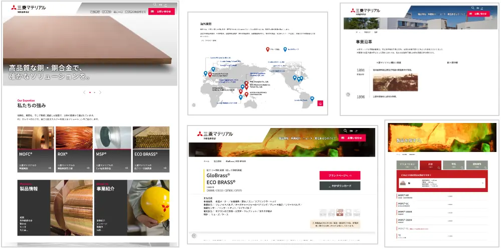

2026.08 — 2026.09
MITSUBISHI MATERIALS
三菱マテリアル 伸銅品事業 Webサイト リニューアル

01 / RESPONSIVE DESIGN
Responsive Design
既存デザインをもとに、PC・タブレット・スマートフォンで一貫した閲覧体験になるよう調整。
公開前案件につき、画像は非表示とさせていただきます。
公開前案件につき、画像は非表示とさせていただきます。
02 / PRODUCT SEARCH UI
Product Search UI
既存CSS・JavaScriptを解析しながら、製品検索UIの調整・実装を担当。
03 / JAPANESE / ENGLISH
Japanese / English
日本語・英語ページ双方の制作に対応し、既存サイトの構造・表現ルールとの整合性を保ちながら展開。
04 / PROJECT NOTES
Project Notes
途中参画でも既存仕様とコードを短期間で把握し、既存環境を大きく崩さず保守性を意識して改修しました。